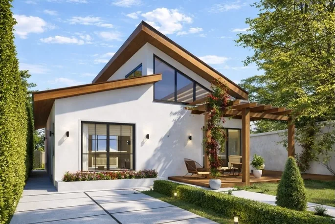
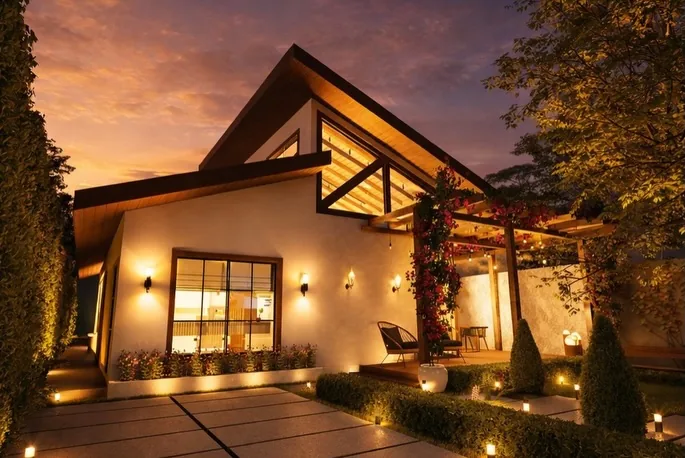

Projetos exclusivos e interiores sofisticados.
Residencial, comercial, interiores e construção. Espaços que inspiram, valorizam e transformam vidas.
Projetos que acolhem
Fachadas, áreas externas e interiores. Toque em um projeto para ver a galeria.
Do dia à noite
A iluminação muda a leitura da arquitetura. Arraste para comparar o mesmo projeto em dois momentos.


DiaNoiteDo projeto ao canteiro
Registros de obras em andamento, da alvenaria ao acabamento. Toque em uma foto para ampliar.
Tem um terreno ou uma obra para acompanhar?
Solicitar projetoÉrica Chanandry
Sou arquiteta e urbanista desde 2015 e atuo no mercado da construção. Meu trabalho é criar projetos exclusivos e interiores sofisticados, com atenção ao conforto, à funcionalidade e à identidade de quem vai viver cada espaço.
Atendo em todo o Brasil, com bases em Macapá e em Brasília, do primeiro desenho à obra entregue.
Projetamos espaços que inspiram, valorizam e transformam vidas.
Formação
- Arquiteta e Urbanista, desde 2015
- MBA em Avaliação, Auditoria e Perícia da Engenharia
- MBA Master em Arquitetura e Iluminação
Reconhecimentos
- Prêmio Portobello 2020, Arquiteta Especificadora
- Prêmio Club Casa 2026, Arquiteta Especificadora
Onde a conversa vira projeto
A consultoria e o desenvolvimento do projeto acontecem em um ambiente de madeira, luz e conforto, com o mesmo cuidado que levamos para cada obra.
Da ideia à obra pronta
Arquitetura residencial
Casas e sobrados pensados do terreno aos acabamentos, com fachada e plantas feitas para o seu jeito de viver.
Arquitetura comercial
Escritórios, lojas e consultórios com identidade, conforto e funcionalidade para o dia a dia do negócio.
Interiores
Ambientes sofisticados com iluminação, marcenaria, decoração e ambientação planejadas em conjunto.
Construção
Execução da obra com acompanhamento. Também trabalhamos com construção pelo Minha Casa Minha Vida.
Reforma
Renovação de ambientes e imóveis com planejamento, para valorizar o que você já tem.
Consultoria técnica
Orientação profissional antes de comprar, reformar ou construir, para decidir com segurança.
Como trabalhamos
Consultoria
Conversamos sobre o seu objetivo, o espaço e o estilo de vida de quem vai morar ou trabalhar nele.
Projeto
Desenvolvemos a arquitetura com plantas, volumes e imagens para você enxergar o resultado antes da obra.
Interiores
Detalhamos materiais, iluminação, marcenaria e decoração para cada ambiente.
Obra
Acompanhamos a execução para que o projeto aprovado seja o projeto entregue.
Todo o Brasil, um padrão
Todo o Brasil
Atendemos clientes em qualquer cidade do país, do primeiro desenho à obra entregue. Nossas bases ficam em Macapá e em Brasília.
Macapá
Projetos residenciais, comerciais e de interiores, com acompanhamento de obra.
Brasília
Comprou seu imóvel em Brasília? Projetos de interiores, iluminação, decoração e ambientação com soluções personalizadas.
Vamos conversar sobre seu projeto
Conte o que você imagina. Respondemos no horário de atendimento para combinar os próximos passos.
Segunda a sexta, das 8h às 19h
Sábado, das 9h às 13h
Atendimento em todo o Brasil